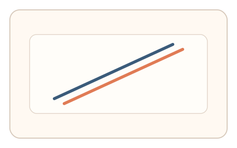
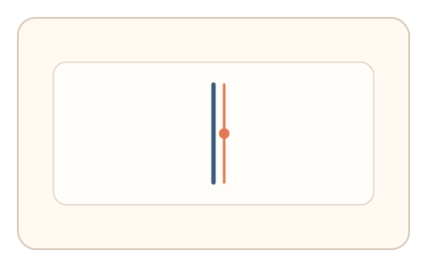
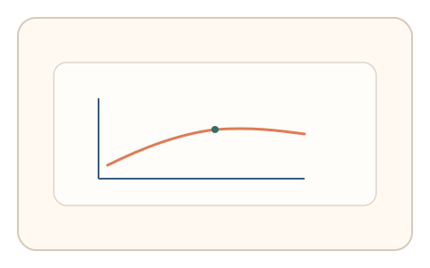

#48
视觉思考范式：时域/适应/残影
已扩展
倾斜后效校准
暴露倾斜条纹后调节到真垂直，利用偏移量与微调步长验证倾斜后效特征。
概念原文
暴露倾斜条纹后，要求用户调节到“真垂直”；记录偏移量与调节微步。
用倾斜后效引起的系统性偏差作为生理签名。
研究背景
倾斜后效会使垂直线条呈现倾斜错觉，偏移量与调节步长具有稳定范围。通过测量偏移量与微调行为，可获得稳定的视觉适应信号。
核心机制
- 呈现倾斜条纹进行短时适应。
- 切换到可调节的垂直基线。
- 用户调节到“真垂直”位置。
- 记录偏移量与微调步长。
用户流程
- 步骤 1：用户观看倾斜条纹刺激。
- 步骤 2：出现基线并开始调节。
- 步骤 3：系统记录偏移与判定。
判定信号
偏移量方向与幅度
倾斜后效引发系统性偏移。
微调步长与回撤次数
真实调节通常存在细小步进。
判定逻辑
评估偏移量是否在预期范围，并结合微调步长；偏移异常或一次到位判异常。
对抗面
- 脚本直接设定固定角度
- 重放真实用户的调节轨迹
防御与缓解
- 随机化倾斜角度与适应时长
- 加入轻微噪声与纹理扰动
- 叠加微时序与轨迹信号进行多信号判定
可达性与风险
提供低倾斜强度或替代任务模式，避免对视觉敏感用户造成不适。
- 显示设备倾斜校准差异影响判定
- 强刺激可能引起不适
可视化状态

状态 1：倾斜适应
倾斜条纹刺激短时适应。

状态 2：垂直调节
用户调节到真垂直。

状态 3：后效判定
分析偏移量与微调步长。
参考资料
Tilt aftereffect
说明倾斜后效与角度偏移。
Visual adaptation
说明视觉适应与主观校准。